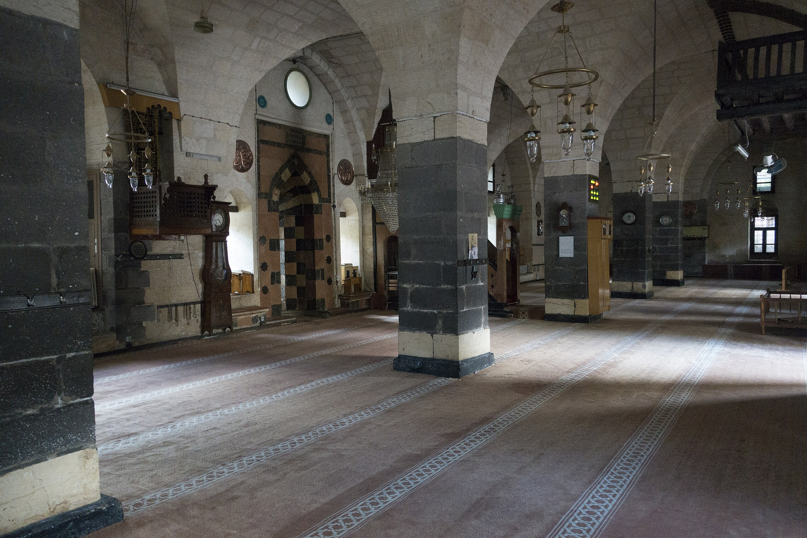
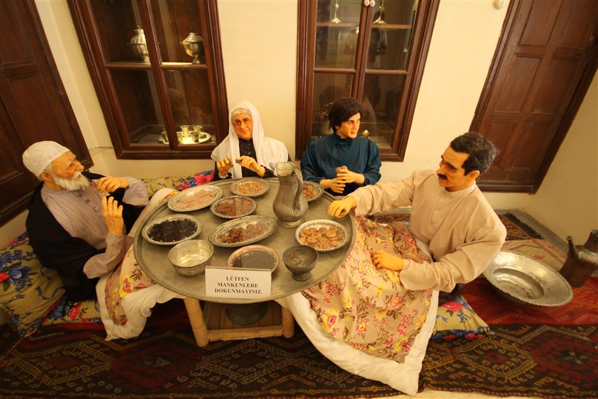

Gaziantep
Baklavanın şerbeti, fıstığın lezzeti Gaziantep'te damaklarda iz bırakır.

Gaziantep ili, Türkiye'deki en eski yerleşim yerlerinden biridir ve pidesi ile tanınır.
Gaziantep doğal güzellikleri arasında müzeleri önemli bir yer tutar.
Gaziantep doğal güzellikleri arasında tarhanası önemli bir yer tutar.

Ali Nacar Camii
Osmanlı döneminden kalma, taş işçiliğiyle dikkat çeken tarihi cami. İç mekanındaki süslemeler ve hat yazıları görülmeye değerdir.

Emine Göğüş Mutfak Müzesi
Geleneksel Gaziantep mutfağının ve mutfak kültürünün sergilendiği, tarihi bir evde kurulmuş müze.

Gaziantep Kalesi
Roma döneminden kalma, şehrin merkezinde yer alan tarihi kale. Savunma amaçlı inşa edilmiş olup, günümüzde müze olarak hizmet vermektedir.